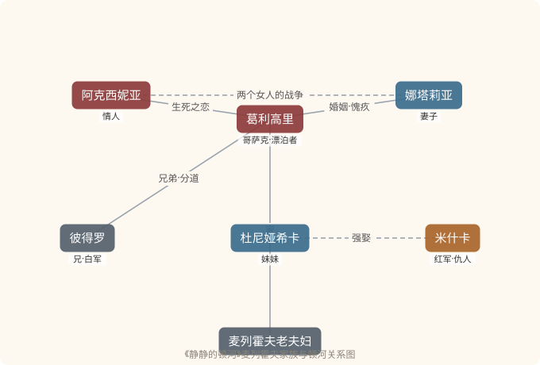

静静的顿河
一、基本信息
| 作者 | 肖洛霍夫 |
|---|---|
| 成书/出版 | 1928—1940年四部陆续出版（Britannica） Mikhail Sholokhov — Encyclopaedia Britannica（百科全书） |
| 国别/地区 | 俄国 |
| 时代 | 现当代 · 20世纪 |
| 体裁 | 长篇史诗小说（四部曲） |
| 语言 | 俄语（顿河方言） |

二、创作背景
出版史（Britannica）：四部于1928—1940年间出版；第一部出版时作者仅22岁，'剽窃'质疑随之而起——后经挪威统计分析与手稿发现澄清（Britannica：Plagiarism accusations...persisted despite Norwegian statistical analysis and the recovery of his manuscript supporting his authorship）。
题材背景：1912—1922年——一战、二月革命、十月革命、内战中的顿河哥萨克：他们有土地、有旧制度传统，在红军与白军之间被反复'翻转'（通说）。
体制内的异端：Britannica 称其为'objective portrayal of the Don Cossacks' struggle against the Bolsheviks'（对哥萨克反对布尔什维克斗争的客观描写）——在苏联文学中几乎孤例。
三、内容脉络
第一部（1912—1916）：鞑靼村——葛利高里·麦列霍夫爱上邻居司契潘之妻阿克西妮亚；与娜塔莉亚成婚后仍回归阿克西妮亚；一战征兵入伍，战争中负伤受勋——哥萨克荣誉与战争现实的裂缝。
第二部（1916—1918）：革命与哥萨克的动摇；葛利高里先随哥萨克'拯救顿河'委员会，又加入红军（布琼尼骑兵），因滥杀被逐——立场在他与历史之间反复摇摆。
第三部（1919）：顿河暴动——哥萨克全村反抗红军的'清除'政策；葛利高里在暴动军中升为师长；阿克西妮亚被敌对双方争夺、妻子娜塔莉亚之死（通说细节）。
第四部（1920—1922）：白军败退、佛明匪帮的末路；葛利高里回到鞑靼村——女儿已死、家破人亡；他在黎明前把枪弹沉入顿河，走向'他还不知道的'河口的十字路口——最后看见'黑色的天空与一轮耀眼的黑太阳'（结尾原文意，公有领域）。
四、主要人物表
| 人物 | 身份 | 说明 |
|---|---|---|
| 葛利高里·麦列霍夫 | 哥萨克·军官·漂泊者 | '悲剧性中间人物'：忠诚于土地而无法忠诚于任何旗帜（通说） |
| 阿克西妮亚 | 邻居之妻→情人 | 被丈夫与父亲虐待的'烈火女人'——与葛利高里生死相随 |
| 娜塔莉亚 | 葛利高里之妻 | 贤妇：以自残控诉丈夫的背叛（通说细节） |
| 彼得罗 | 葛利高里之兄 | 白军军官——兄弟分道 |
| 米什卡·科舍沃伊 | 红军·后来者 | 杀死葛利高里之弟、强娶其妹——'胜利者'的残酷（通说） |
| 伊莉妮奇娜、潘苔莱 | 麦列霍夫夫妇 | 旧哥萨克家庭的两极 |
五、主题与艺术特点
- 中间人物的悲剧：葛利高里'在红军与白军之间'找不到真理——肖洛霍夫以同情写'被历史碾碎的人'（通说）。
- 哥萨克文明的挽歌：土地、马匹、家庭与村社——革命对'旧俄国'乡村的最终清算（通说）。
- 爱情与战争的双螺旋：阿克西妮亚线与战争线互相剪接——'顿河的水静静流，人的血汹涌流'（通说概括）。
- 客观性：不粉饰红军的暴行、也不美化白军——Britannica 称其'客观描写'（Britannica：objective portrayal）。
- 艺术特点：四部曲百万字、顿河方言与民歌嵌入、草原意象（黑太阳、割草场）。
六、影响与评论
- Britannica（Sholokhov 条目）：'became the most widely read novel in the USSR'（苏联最广泛阅读的小说）、1941斯大林奖、1965诺奖。
Mikhail Sholokhov — Encyclopaedia Britannica（百科全书） - Britannica：剽窃之争与手稿澄清——文学鉴定学的经典案例。
Mikhail Sholokhov — Encyclopaedia Britannica（百科全书） - 国际影响：好莱坞与欧洲的改编（通说待核）；'静静的顿河'为汉语世界对苏联文学的入口之一（通说待核）。
Mikhail Sholokhov — Encyclopaedia Britannica（百科全书） - 中译：金人译本（人民文学出版社，通说待核）与草婴译本（通说待核）。
Mikhail Sholokhov — Encyclopaedia Britannica（百科全书）
七、阅读建议
- 百万字四部曲——按'战争—爱情—暴动—结局'四块推进。
- 哥萨克制度与词汇（阿塔曼、村社、军功十字）需注释。
- 政治立场的反复——跟随葛利高里的视角而非党的视角。
- 金人译《静静的顿河》（人民文学出版社）：通行经典译本。
- 草婴译本（人民文学/上海译文，通说待核）：另一选择。
- 英译：Stephen Garry（1934起）/ Robert Daglish（通说待核）。
先读第一部（阿克西妮亚线与征兵）→ 第三部（暴动）与第四部结尾 → 回读第二部补内战全貌。
八、待核实
- 四部出版年份与出版社（Госиздат 等）待核。
- 金人/草婴译本出版信息待核。
- 剽窃案文献（1974小册子、1999手稿）待核。
- 结尾'黑太阳'原文逐字核对照金人译本。
本页主要来源
肖洛霍夫的其他收录作品：静静的顿河